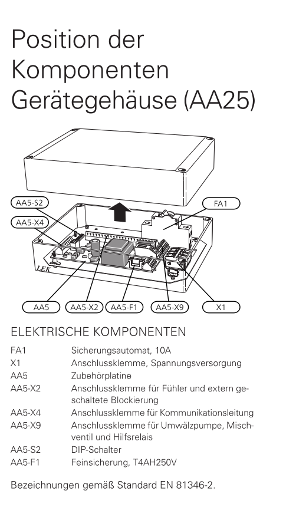
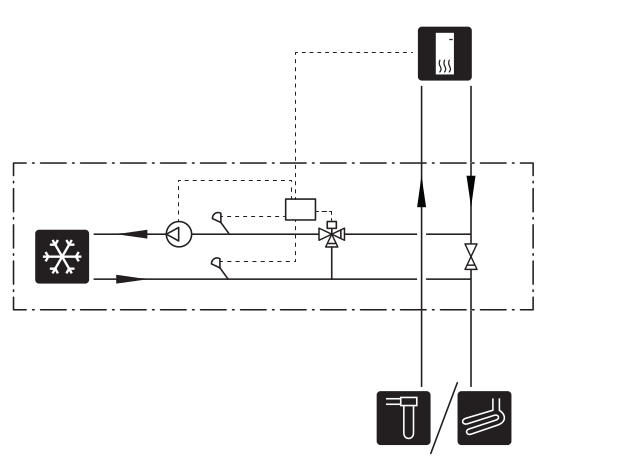

Mit dem Zubehör AXC können zusätzliche Funktionen umgesetzt werden.

NIBE bietet dazu 3 Varianten von AXC an, laut dem technischen Berater der Firma NIBE sind diese jedoch alle baugleich und können per DIP-Schalter auf die benötigte Funktion eingestellt werden.
In den Handbüchern sind diese Funktionen den einzelnen Varianten zugeordnet:
Mit dieser Funktion kann eine externe Zusatzheizung, z.B. ein Öl- oder Gasheizkessel bzw. ein Fernwärmeübertrager, den Heizbetrieb unterstützen.
Das Innenmodul steuert ein Mischventil (QN11) und eine Umwälzpumpe (GP10) über die Zubehörplatine in AXC 30/40/50. Kann die Wärmepumpe die korrekte Vorlauftemperatur (BT25) nicht aufrechterhalten, startet die Zusatzheizung. Nach einem Anstieg der Kesseltemperatur (BT52) auf ca. 55 °C sendet das Innenmodul ein Signal an das Mischventil (QN11), um den Zufluss von Heizungswasser freizugeben. Das Mischventil (QN11) wird so geregelt, dass die tatsächliche Vorlauftemperatur dem theoretisch errechneten Sollwert des Innenmoduls entspricht. Wenn der Heizbedarf so weit sinkt, dass keine Zusatzheizung mehr benötigt wird, schließt sich das Mischventil (QN11) vollständig. Die Werkseinstellung für die minimale Laufzeit, die den Heizkessel in Bereitschaft hält, beträgt 12 h (einstellbar in Menü 5.3.2).
Ab Softwareversion 8061R4 kann das Mischventil (QN11) mit einem analogen Steuersignal von 0-10 V gesteuert werden.
Die Funktion „smart energy source“ kann ausgewählt werden, wenn eine automatische Festlegung des Vorrangs zwischen Wärmepumpen- und Zusatzheizungsbetrieb je nach niedrigstem Preis oder geringster Umweltbelastung stattfinden soll.
Mit dieser Funktion kann eine externe Zusatzheizung, z.B. ein Elektroheizkessel, den Heizbetrieb unterstützen.
Mit der Zubehörplatine in AXC 30/40/50 stehen drei weitere potenzialfreie Relais für die Steuerung der Zusatzheizung zur Verfügung. Dies ergibt zusätzlich 3 lineare oder 7 binäre Stufen.
Der Volumenstrom durch die Zusatzheizung wird entweder mit der Ladepumpe (GP12) oder der externen Umwälzpumpe (GP10) sichergestellt.
Eine externe stufengeregelte Zusatzheizung kann über bis zu drei potenzialfreie Relais in F1345/F1355 (3 Stufen linear oder 7 Stufen binär) gesteuert werden. Mit dem Zubehör AXC 50 stehen Ihnen drei weitere potenzialfreie Relais für eine Zusatzheizungssteuerung zur Verfügung.
Dies ergibt dann maximal 3 + 3 lineare oder 7 + 7 binäre Stufen.
Der Volumenstrom durch die Zusatzheizung wird entweder mit der Ladepumpe (GP12) oder der externen Umwälzpumpe (GP10) sichergestellt.
Ab Softwareversion 7952R2 kann die stufengeregelte Zusatzheizung auch mit einem analogen Steuersignal von 0-10 V gesteuert werden.
Diese Zubehörfunktion wird eingesetzt, wenn SMO 40 in einem Haus mit bis zu vier verschiedenen Klimatisierungssystemen installiert ist, die mit unterschiedlichen Vorlauftemperaturen betrieben werden sollen, z.B. wenn ein Gebäude über Heizkörper und Fußbodenheizung verfügt.
Diese Funktion ermöglicht vorübergehenden Luxus, Mischventil und Brauchwasserzirkulation.
Vorübergehender Luxus (Extra-Brauchwasser)
Wenn eine Elektroheizpatrone im Speicher installiert ist, kann zeitgleich Brauchwasserwärme erzeugt werden, während die Wärmepumpe gleichzeitig dem Heizbetrieb Vorrang einräumt.
Mischventil
Ein Fühler ermittelt die Brauchwasser-Austrittstemperatur zum Brauchwassernetz und stellt das Mischventil am letzten Brauchwasserspeicher entsprechend ein, bis die Solltemperatur erreicht wurde.
Brauchwasserzirkulation (BWZ)
Eine Pumpe kann zeitgesteuert die Brauchwasserzirkulation vornehmen
Das Kühlsystem ist mit dem Wärmequellenkreis der Wärmepumpe verbunden, wobei die Kältezufuhr vom Kollektor über die Umwälzpumpe und das Mischventil
erfolgt.
Bei einem Kühlbedarf (eine Auslösung erfolgt per Außenfühler und evtl. vorhandenem Raumfühler) wird die Umwälzpumpe aktiviert. Das Mischventil führt die Steuerung so aus, dass der Kältefühler den aktuellen Sollwert entsprechend der Außenlufttemperatur sowie den eingestellten Minimalwert für die Kühltemperatur erreicht (damit sich keine Kondensflüssigkeit bildet).
Achtung
Dieses Zubehör kann eine Aktualisierung der Software in F1345/F1355 erforderlich machen. In der Wärmepumpe wird mindestens Programmversion 2755 benötigt.
Der Wärmequellenkreis ist über ein Umschaltventil mit einem Wärmeübertrager verbunden. Die Sekundärseite des Wärmeübertragers ist mit dem Heizkreis über ein Mischventil und eine Umwälzpumpe verbunden.
Bei einem Kühlbedarf (eine Auslösung erfolgt per Außenfühler und evtl. vorhandenem Raumfühler oder per Fernbedienung) werden das Mischventil und die Umwälzpumpe aktiviert. Das Mischventil sorgt unter anderem dafür, dass der Kältefühler den aktuellen Sollwert entsprechend der Aussenlufttemperatur erreicht sowie den eingestellten Minimalwert für die Kühltemperatur nicht unterschreitet (damit sich keine Kondensflüssigkeit bildet).
Achtung
Dieses Zubehör kann eine Aktualisierung der Software in F1345/F1355 erforderlich machen. In der Wärmepumpe wird mindestens Programmversion 2755 benötigt.
In Gebäuden mit mehreren Klimatisierungssystemen, die unterschiedliche Vorlauftemperaturen erfordern, kann das Zubehör ECS 40/ECS 41 angeschlossen werden. Ein Mischventil senkt hierbei die Temperatur z. B. für die Fußbodenheizung.
Das Zubehör PCS 44 ermöglicht den Anschluss von passiver Kühlung, z.B. mit Gebläsekonvektoren. Das Kühlsystem wird mit dem Wärmequellenkreis der Wärmepumpe verbunden, wobei die Kältezufuhr vom Kollektor über eine Umwälzpumpe und das Mischventil erfolgt.
Um eine Kondensatbildung zu vermeiden, müssen Rohrleitungen und andere kalte Oberflächen mit diffusionsdichtem Material isoliert werden.
Liegt ein hoher Kühlbedarf vor, sind Kälteverbraucher mit Tropfschale und Kondensatanschluss erforderlich.
Das Wärmequellensystem ist mit einem Druckausdehnungsgefäß auszustatten. Ein eventuell vorhandenes Niveaugefäß wird ersetzt.

Außenfühler
Der Außenluftfühler (BT1) ist an einem schattigen Platz an der Nord- oder Nordwestseite des Hauses zu befestigen, wo keine störende Einstrahlung z. B. durch die Morgensonne erfolgt.
Der Außenluftfühler wird an Anschlussklemme AA2-X28:14 und AA2-X29:GND angeschlossen.
Zubehör mit Zubehörplatine (AA5)
Zubehör mit Zubehörplatine (AA5) wird an Anschlussklemme AA2-X30:1, 3, 4 in S1256 angeschlossen.
Verfügbare Eingänge
Verfügbare Eingänge an der Basisplatine (AA2) für diese Funktionen sind AA2-X28:3-11. Die jeweilige Funktion wird an den verfügbaren Eingang sowie an GND (AA2-X29) angeschlossen.
Verfügbare Ausgänge
Verfügbarer Ausgang: AA2-X27. Der Ausgang ist ein potenzialfrei wechselndes Relais. Ist S1256 abgeschaltet oder im Reservebetrieb, befindet sich das Relais im Modus C-NC.
Achtung
Der Relaisausgang darf mit maximal 2 A bei Wirklast (230 V~) belastet werden.
Hinweis
Das Zubehör AXC ist erforderlich, wenn mehr als eine Funktion mit dem AUX-Ausgang verbunden werden soll.
Eingang
Funktion
AA2-X28:3
Außentemperatursensor
AA2-X28:4
Kühlung/Heizung (BT74), entscheidet über eine Umschaltung zwischen Kühl- und Heizbetrieb (auswählbar, wenn die Kühlfunktion in Menü 7.2.1 „Zubehör hinzufügen/entfernen“ aktiviert ist).
AA2-X28:5
Externer Rücklauffühler (BT71)
AA2-X28:6
anzeigender Brauchwasserfühler für BWZ (BT70). Wird am Vorlauf platziert.
AA2-X28:7
anzeigender Brauchwasserfühler für BWZ (BT82). Wird am Rücklauf platziert.
Eine Umwälzpumpe zur Zirkulation des Brauchwassers kann von S1256 gesteuert werden. Das zirkulierende Wasser muss eine Temperatur haben, die sowohl eine Bakterienansiedlung als auch ein Verbrühen verhindert; nationale Normen sind zu beachten.
Der BWZ-Rücklauf kann mit Anschluss XL5 bzw. mit einem freistehenden Brauchwasserspeicher verbunden werden. Wenn nach der Wärmepumpe ein elektrischer Brauchwasserspeicher angeschlossen wird, muss der BWZ-Rücklauf mit dem Speicher verbunden werden.
Die Umwälzpumpe wird über den AUX-Ausgang in Menü 7.4 - „Verfügbare Ein-/Ausgänge“ aktiviert.
Die BWZ kann um Brauchwasserfühler für BWZ (BT70) und (BT82) ergänzt werden, die über den AUX-Eingang in Menü 7.4 - „Verfügbare Ein-/Ausgänge“ angeschlossen werden.
Wenn eine größere Badewanne oder ein anderer großer Brauchwasserverbraucher angeschlossen wird, sollte die Anlage um einen zusätzlichen Brauchwasserspeicher ergänzt werden.
Brauchwasserspeicher mit Elektroheizpatrone
In einem Brauchwasserspeicher mit Elektroheizpatrone wird das Wasser primär von der Wärmepumpe erwärmt. Die Elektroheizpatrone des Brauchwasserspeichers wird zum Warmhalten verwendet sowie bei nicht ausreichender Leistung der Wärmepumpe.